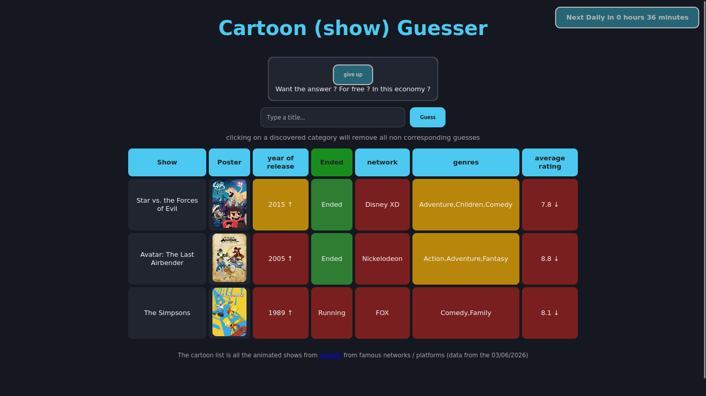

Cartoondle
Refaire un jeu dans la continuité des jeux wordle

Langage : Javascript, HTML, CSS
Technologies : github pages
Projet : Perso
Repository : https://github.com/ma-gabriel/cartoons
Le projet
C'est un projet perso qui m'a pris quelques jours a faire à peine dans le cadre d'un jeu entre amis, et pour une fois le site est testable a l'addresse suivante: https://ma-gabriel.github.io/cartoons/
Le jeu consiste a trouver un dessin animé en fonction d'infos qu'on récupere en proposant d'autres dessins animés, par exemple si c'est mieux ou moins bien noté ou si c'est plus récent
Ce que j'ai appris
Je n'ai pas gagné de connaissances grâce à ce jeu, mais ça m'a permit de finir un site (idée comprise) en seulement quelques jours
← Retour aux projets